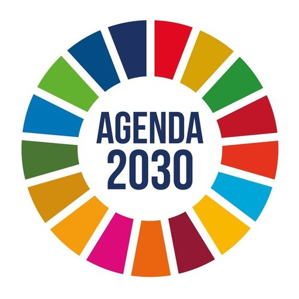

Agenda 2030

Resultados de aprendizaje y criterios de evaluacion que se evaluarán en esta unidad.
| Resultados de aprendizaje de la unidad didáctica: |
|---|
| RA. 1: Identifica los aspectos ambientales, sociales y de gobernanza (ASG) relativos a la sostenibilidad teniendo en cuenta el concepto de desarrollo sostenible y los marcos internacionales que contribuyen a su consecución. |
| Criterios de evaluación de la unidad didáctica: |
|---|
| c) Se han relacionado los Objetivos de Desarrollo Sostenible (ODS) con su importancia para la consecución de la Agenda 2030. |
| d) Se ha analizado la importancia de identificar los aspectos ASG más relevantes para los grupos de interés de las organizaciones relacionándolos con los riesgos y oportunidades que suponen para la propia organización. |
1 - Agenda 2030
- La Agenda 2030 para el Desarrollo Sostenible es un acuerdo global aprobado por consenso por los 193 Estados miembros de las Naciones Unidas el 25 de septiembre de 2015, mediante la resolución A/RES/70/1 titulada Transformar nuestro mundo: la Agenda 2030 para el Desarrollo Sostenible.
- Entró en vigor formalmente el 1 de enero de 2016 como un marco internacional para orientar las políticas de desarrollo económico, social y ambiental.
2 - Estructura y Principios Fundamentales
-
Objetivos y metas:
Se articula alrededor de 17 Objetivos de Desarrollo Sostenible (ODS) y 169 metas específicas, cuyo seguimiento se realiza mediante un marco mundial que cuenta con más de 230 indicadores únicos. -
Evolución respecto a los ODM:
Surge como continuación de los Objetivos de Desarrollo del Milenio (ODM, 2000-2015). -
A diferencia de los ODM (centrados principalmente en problemas sociales de países en desarrollo), la Agenda 2030 tiene carácter universal (se aplica a todos los países) e integra de forma indivisible la dimensión económica, la social y la ambiental.
-
Principios rectores:
- Universalidad: Aplica a todos los Estados según sus circunstancias, sin dividirlos de forma rígida entre donantes y receptores.
- Integración e indivisibilidad: Los objetivos no pueden abordarse de forma aislada, ya que existen sinergias y conflictos (trade-offs) entre ellos.
- No dejar a nadie atrás (leave no one behind): Prioriza la atención a los grupos en mayor situación de vulnerabilidad y la reducción de desigualdades.
- Las cinco P: Agrupa sus áreas de acción en Personas (pobreza y dignidad), Planeta (protección ambiental), Prosperidad (progreso económico y tecnológico), Paz (sociedades inclusivas) y Alianzas (Partnerships).
3 - Implementación y Financiación
- Gobernanza y localización:
La Agenda no establece un mecanismo único; cada país la adapta a sus estructuras institucionales mediante estrategias nacionales y planes locales (como la Estrategia de Desarrollo Sostenible 2030 o la Red de Entidades Locales en España). El seguimiento se evalúa en el Foro Político de Alto Nivel (HLPF) mediante Exámenes Nacionales Voluntarios. - Brecha de financiación:
La ONU señala un déficit de financiación anual de entre 2,5 y 4 billones de dólares para alcanzar los ODS. Para cerrar esta brecha se apela al sector privado mediante herramientas como la Inversión Socialmente Responsable (criterios ASG/ESG) y la Inversión de Impacto.
4 - Balance de Progreso Global
Las evaluaciones globales muestran que el plan está en riesgo y avanza a dos velocidades:
- Estado de las metas:
Según los datos oficiales, solo el 36% de las metas va por buen camino o registra un progreso moderado (15% encaminadas y 21% moderado). Casi la mitad (49%) muestra avances insuficientes y un 15% ha retrocedido a niveles peores que los de 2015.
- Hitos positivos: Se registraron avances notables en el acceso a agua potable (casi 1.000 millones de personas adicionales desde 2015), electrificación global (92%), conectividad digital (74%) y extensión de la protección social.
- Graves barreras: La crisis climática (con récords de temperatura global), el aumento de conflictos armados, la caída de la ayuda oficial al desarrollo y la persistencia de la pobreza extrema y la inseguridad alimentaria están provocando retrocesos estructurales.
5 - Críticas y Debates Ecosociales
- Voluntariedad ( Soft Law ): Al no ser un acuerdo jurídicamente vinculante ni establecer sanciones por incumplimiento, depende de la voluntad política de los gobiernos de turno, lo que facilita el greenwashing o cumplimiento cosmético.
- Contradicción biofísica: Análisis ecosociales critican que el ODS 8 promueva un "crecimiento económico sostenido", lo que resulta incompatible con los límites planetarios y la escasez de energía y materiales. Además, se señala que muchas metas tienen un enfoque de "final de tubería" (atienden los síntomas en lugar de las causas estructurales).
- Oposición y desinformación: Ha encontrado contestación política en sectores negacionistas y de extrema derecha, además de ser blanco de teorías conspirativas que le atribuyen de forma falsa mandatos obligatorios.
6 - Foro de discusión
Aspectos ASG, Grupos de Interés y Gestión de Riesgos y Oportunidades
- ¿Son los Objetivos de Desarrollo Sostenible (ODS) herramientas suficientes y eficaces para hacer realidad la Agenda 2030, o su carácter de soft law **(no vinculante) compromete su cumplimiento real?
- ¿Existe una contradicción insalvable dentro de la Agenda 2030 al promover el crecimiento económico (ODS 8) en un planeta con límites biofísicos finitos?
- ¿Puede alcanzarse la premisa de "no dejar a nadie atrás" mediante la "localización" de los ODS si no se corrigen primero los impactos transfronterizos y la huella ecológica de los países ricos sobre el Sur Global?
Relación entre los ODS y su importancia para la Agenda 2030
- ¿Identificar e integrar los aspectos ASG (Ambientales, Sociales y de Gobernanza) es una oportunidad estratégica real de innovación o corre el riesgo de convertirse en una herramienta de greenwashing (lavado verde)?
- En caso de conflicto de intereses, ¿debe la dirección de una organización priorizar los criterios ASG ambientales e intergeneracionales por encima de la rentabilidad económica a corto plazo exigida por los accionistas?
- ¿Garantizan las nuevas normativas europeas sobre informes de sostenibilidad y diligencia debida (CSRD y CSDDD) una prevención efectiva de riesgos corporativos, o impondrán barreras inasumibles para el tejido empresarial?
| Licencia Creative Commons: | |
|---|---|
 |
Reconocimiento-NoComercial-CompartirIgual CC BY-NC-SA: No se permite un uso comercial de la obra original ni de las posibles obras derivadas, la distribución de la cuales se debe hace con una licencia igual a la que regula la obra original. |